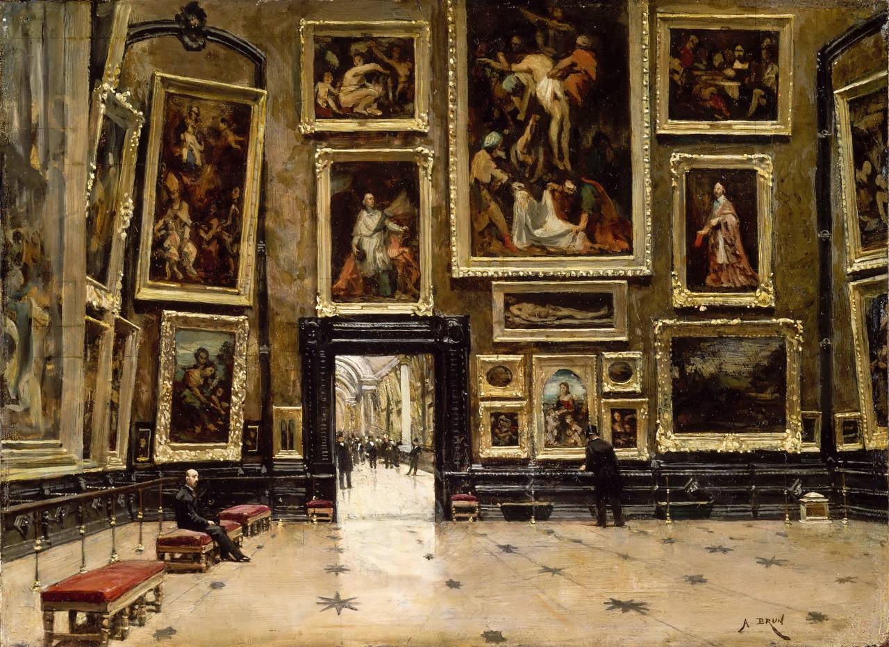

Александр Жан-Батист Брюн
Vue du Salon Carré au Louvre (Вид на Салон Карре в Лувре), 1880

📄 Холст 🖌 масло 📏 24 x 32 см
🏛 Лувр, Париж (в запаснике)
Эта небольшая картина представляет собой точное и достоверное изображение "Салона Карре" девятнадцатого века. В этой работе можно узнать знаменитые полотна Веронезе, Рубенса, Леонардо да Винчи, Рафаэля, Пуссена и других мастеров.
#louvre @oldpictureart